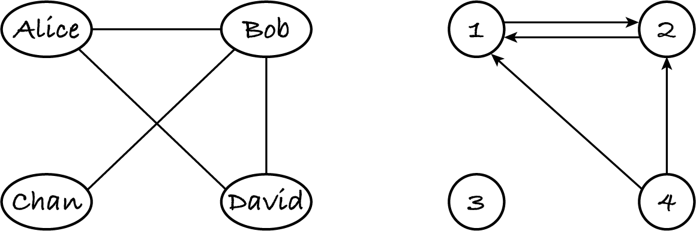

17.5. Adjacency list representation
The row for node A in the adjacency matrix indicates, with true values, the out-neighbours of A. A more compact representation is to only list the out-neighbours and to omit all other nodes.
Let’s consider the same example graphs.
The example undirected graph is represented as follows.
nodes = ['Alice', 'Bob', 'Chan', 'David']
edges = [
[1, 3], # neighbours of node 0 ('Alice')
[0, 2, 3], # neighbours of node 1 ('Bob')
[1], # neighbours of node 2 ('Chan')
[0, 1] # neighbours of node 3 ('David')
]
This contains the same information as the adjacency matrix: each row of n Booleans is represented as the indices of the true values.
Instead of an adjacency matrix we have a lookup table of sequences. Since most real-world networks are sparse, each sequence is usually very short, compared to the number of nodes. The length of the sequence for node A is the out-degree of A.
For an undirected graph, each edge (A, B) is stored twice: A is in the neighbours of B and B is in the neighbours of A.
The digraph can be represented like this:
nodes = [1, 2, 3, 4]
edges = [
[1], # out-neighbours of node 0 (labelled 1)
[0], # out-neighbours of node 1 (labelled 2)
[], # out-neighbours of node 2 (labelled 3)
[0, 1] # out-neighbours of node 3 (labelled 4)
]
If nodes are of a hashable type, we can use a single hash table to store the nodes and their out-neighbours. The digraph would be stored in dictionary { 1: [2], 2: [1], 3: [], 4: [1, 2] } and the undirected graph in dictionary
{
'Alice': ['Bob', 'David'],
'Bob': ['Alice', 'Chan', 'David'],
'Chan': ['Bob'],
'David': ['Alice', 'Bob']
}
There are further variants of this representation, like using linked lists instead of arrays or also storing the in-neighbours of each node. An adjacency list representation of a graph is a map of nodes to their in- or out-neighbours. Each entry in the map, i.e. each collection of in- or out-neighbours, is called that node’s adjacency list. Again, the word ‘list’ is used in the general sense of listing: the adjacency lists can be of any suitable collection type.
Let’s assume that each adjacency list only includes the out-neighbours. This means that every directed edge (A, B) is represented once, namely by having out-neighbour B in the adjacency list for A. If the graph is undirected, then each edge is stored twice as we’ve seen above.
The consequence of this is that any graph operation that goes through all the out-neighbours of all the nodes is effectively going through all the nodes once and through all the edges once or twice and thus has complexity Θ(n) + Θ(e). Realistic graphs tend to have more edges than nodes, so we simplify to Θ(e). This eases the complexity analysis of graph algorithms.
Note: An algorithm that goes through each out-neighbour of each node is going through all the edges. This takes Θ(e) time for adjacency lists of out-neighbours.
17.5.1. Exercises
Exercise 17.5.1
For each operation below, describe briefly its implementation for a digraph and state its complexity. Assume that the graph is stored as a Python dictionary of nodes to lists of out-neighbours, as shown above. Remember that all operations on dictionaries take constant time.
Operation |
Implementation |
Complexity |
|---|---|---|
add node A |
||
remove node A |
remove A from all lists and delete the entry for A |
Θ(e) |
has edge (A, B) |
check if B is in the list for A |
Θ(out-degree(A)) |
add edge (A, B) |
||
remove edge (A, B) |
||
in-neighbours of A |
||
out-neighbours of A |
||
in-degree of A |
Exercise 17.5.2
We can represent each adjacency list with a Python set instead of a Python list. The example digraph is stored as { 1: {2}, 2: {1}, 3: set(), 4: {1, 2} }.
State the complexities for the operations on a digraph, for this representation.
Operation |
Complexity |
|---|---|
add node A |
|
remove node A |
|
has edge (A, B) |
|
add edge (A, B) |
|
remove edge (A, B) |
|
in-neighbours of A |
|
out-neighbours of A |
|
in-degree of A |
Exercise 17.5.3
Can an adjacency list representation accommodate loops? How?